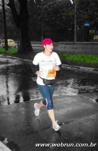
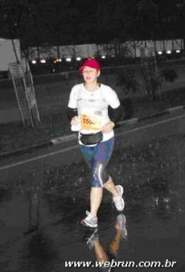

vamo, vamo, vamo…
A saga de setembro
Quando iniciou o mês achei que conseguiria realizar a proeza de correr todo final de semana, mas quase não consegui.
Primeiro, porque inscrevi a Syssi numa corrida kids e o site informava que o evento seria no domingo, mas a data marcada era sábado…… por conta disso eu deixei de marcar qualquer compromisso para o dia 26/09.
À noite depois do merecido descanso da Corrida de Revezamento navegando na net li um artigo que dizia estarem abertas inscrições para a Maratona das Pontes, da qual Melinha havia comentado comigo e eu não quis participar por não estar preparada para 21 km. Agora o site trazia outra informação, haveria também o percurso de 5 km, então minhas lombrigas vibraram…. a distância e há uma semana da corrida ainda com inscrições abertas, imediatamente fiz a minha.
Aqui começaria o meu calvário da semana, de acordo com o regulamento lido no domingo os kits deveriam ser retirados nos 23, 24 e 25, agora no portal informava que a retirada seria nos dias 24 e 25.
Na quinta feira a tardinha fui procurar na caixa de e-mail a confirmação de minha inscrição, rodei tudo quanto foi site, os lançamentos de meus cartões de crédito, nada de… não consegui localizar, mas numa dessas andanças li num portal que no local da retirada dos kits ainda poderia ser realizado as inscrições.
Como no site do evento no começo do mês de setembro acusava somente o percurso de 21 km e agora havia a inclusão de 5 km, depois a mudança da data de retirada dos kits, fiquei receosa e liguei para a organização, mas deu linha ocupada por várias vezes. À noite comentei com Melinha minha decepção, as incorreções das informações da corrida, por outro lado a previsão dizia que o final de semana seria chuvoso uma desculpa para talvez não correr, mas no fundo não era isso que eu queria.
Sexta perto da hora do almoço Melinha manda um e-mail dizendo que havia ligado para a organização e confirmaram que as inscrições ainda poderia ser realizada até as 18 hs de sábado, passando o nome de quem eu deveria procurar. Beleza!!!
Sábado o dia amanheceu nublado sem indicações de chuva com abertura de sol. Fiz minha inscrição antes de levar a Sy para sua corrida.
Domingo – o grande dia, acordamos cedo, quase tudo pronto, ouço Syssi dizendo que estava chovendo, impossível, não ouvi nenhum barulho, quando olhei pela janela vi a rua molhada, a chuva estava começando, rapidamente peguei 2 capas de chuva para eles e fomos. Pensei que fosse passageira, só que conforme chegávamos na zona sul, intensificou as chuvas e o pior, naquela região já chovia há tempos, tanto que o CET com 40 minutos para prova ainda estavam interditando as ruas nas imediações do local do evento.
Paramos no estacionamento e fiz alguns alongamentos para os braços, o marido me olhava com um olhar cético e avisou que não sairia do carro, Sy logo ligou o GPS e colocou num programa de TV, era melhor eles ficarem longe da chuva e com alguma coisa para distração.
O tempo passava e não adiantava ficar esperando, com 10 minutos para as 7 hs sai do carro e debaixo de uma cobertura no estacionamento fiz uns esticados para as pernas (sei que não é o recomendado), o frio foi passageiro e a chuva intensa, então fiquei debaixo de chuva andando de um lado a outro aguardando a largada já que não tinha lugar para se esconder. Se a largada foi no horário fiquei sem saber, como em algumas outras provas esqueci o relógio/cronometro em casa (por falta de hábito de usar no cotidiano).
Dada a largada, nem preciso comentar que de cara precisei procurar lugar para pisar de tantas poças existentes perto do início da subida da Ponte Transamérica, além das poças, tanto na subida como descida da ponte era preciso desviar do curso da água, a chuva castigou os corredores. Quando cheguei no km 2, senti que toda minha roupa estava molhada, como se tivessem jogado um balde de água, mas o boné protegia meu olhos da chuva. Nessas alturas o tênis já estava ensopado.
Quando fiz o retorno corri observando a paisagem, o trem que passava e os pouco passageiros que deviam estar nos olhando e pensando o quanto loucos somos em correr naquele tempo, a vegetação na encosta do morro, o Rio Pinheiros que quase passou despercebido (pois em outras provas naquela região sua presença foi bem marcante tamanho o mau cheiro que exalava). A chuva foi intensa do começo ao fim de meu percurso.
Depois de cruzar a linha de chegada e entregar o chip, recebi apenas um energético e 2 goiabinhas de chocolate, não vi frutas ou outro lanche, se tinha foram entregues apenas para os corredores da meia maratona. Como a desorganização já começou pelo regulamento não poderia ser diferente no final. Acho que esse foi mais um motivo de ter tão poucos corredores no evento. Agora fico temerosa em participar de outros eventos dessa organizadora.
Indo ao encontro do maridão e Sy fui pisando em ovos porque o tênis já incomodava, senti que estava com bolha no arco dos pés pelo fato de ter corrido sem meias com medo de que pudesse enrolar no calcanhar e atrapalhar no percurso.
No caminho lembrei-me de ter lido num post uma dica para levar sempre uma muda de roupa…….. e que falta estaria fazendo naquele momento! Tirei apenas minha camiseta e vesti a jaqueta (que estava seca no carro), depois coloquei uma capa de chuva para manter a temperatura do corpo e fomos para casa. No percurso pegamos a marginal e pude contemplar os outros guerreiros que escolheram a meia maratona, a extensão da pista era de perder de vista, neste momento a chuva já era mais branda.
Quando corri em Salvador (apesar da chuva ter sido intensa antes, durante a prova parou, voltando somente no final, fiquei molhada, mas consegui chegar ao hotel sem frio, e com a roupa quase seca), diferente do que imaginei…… aqui em Sampa embora a chuva fosse intensa, não senti frio durante a corrida. Só senti frio alguns minutos depois de ter terminado a prova.
Bom, quando estávamos chegando em casa avistei da S. João o minhocão com um colorido vermelho ímpar por ter sido naquele domingo palco de mais uma etapa de corrida de rua…… ah, nesse momento não mais chovia nesta região.
Chegado a minha casa tratei de tomar um banho bem quente para não ficar resfriada, tomamos novamente nosso café da manhã e fui para baixo das cobertas, logo adormeceria plenamente realizada. O resto do domingo estava mais para ficar na cama dormindo ou vendo TV, porque ficou nublado com pancadas ocasionais.
Após dias de espera foi divulgado o resultado da corrida, fiz em 44min19seg acima de minha expectativa, enfim, fica para a próxima eu baixar esse tempo. Não me darei por vencida!!! Afinal consegui correr todos os domingos de Setembro!
Agora é anunciada uma pausa, devido às eleições no próximo domingo. Neste período vou pegar seriamente nos treinos e exercícios durante a semana, porque na segunda quinzena do mês de outubro volto para a pista.
NAMASTÊ!!!


.jpg "DSC01714 (1024x576)")
.jpg "DSC01721 (576x1024)")
.jpg "DSC01766 (1024x576)")
.jpg "DSC01860 (1024x576)")

{kind=link}
{kind=link}
{kind=link}
{kind=link}
{kind=link}
Ohayo gozaimasu, Ana
Também fui nessa corrida, mas nos 21km. A chuva com certeza foi a marca registrada. Começou forte, diminuiu, voltou com força, enfim, oscilou várias vezes, mas sem cessar.
Eu tb esperei até o “último minuto” para chegar na largada. Ficar esperando na chuva é bem ruim mesmo.
Pena que vc teve esses problemas com a organização. Comigo foi tudo bem.
Parabéns por mais essa conquista. A gente se vê.
bjs
É isso ai mãe!!! Conseguiu seu primeiro objetivo: completar um mês com corridas em todos os fins de semana. Agora o próximo objetivo é começar a treinar todos os dias XD.
Parabéns!
Bjs
Parabéns Ana, por ter completado com chave ouro (pela obstinação de encarar a chuva) o desafio ao qual se propôs. Isto é muito bom. Aproveite o “tanque cheio”, como diz o Alecão e Vamo, vamo, vamo….
Enquanto eu estava sozinho na Anchieta e Estrada Caminho do Mar, eu sabia que havia mais corredores sob a mesma chuva. Isso nos dá um alento, aquece o espírito e nos fortalece.
Relato primoroso que enriquece muito o portal o cantinho reservado de nossa honrosa equipe de amigos da atividade física.
Ohayo, Fabão
Acho que a última corrida do mes estava fadada mesmo, enfim, tudo fez parte, acho que até como teste de resistência, persistência e aprendizado.
Como era inevitável se molhar, resolvi encarar a chuva mesmo.
Durante a semana fiquei sabendo que vc também participou, e o que é melhor, ganhou a inscrição, isso é bem legal, parabéns!
Obrigada pel comentário e com certeza nos esbarramos pelos circuitos.
jks
Ana
Melinha querida,
Enfim, consegui graças a sua ajuda. Os treinos estão planilhados e já começei a colocá-los em prática.
Quero ser um exemplo a voces, minhas filhas, de perserverança e dedicação, tanto na vida como para manter-se saudável.
jks maternais
Mamys
Claudio
Quase que não consigo, mas foi quase…
Acho que os limites nossos são testados durante essas provas e a cada realizada, como vc mesmo disse, abasteço meu tanque para a próxima.
Meu tempo está longe de ser o melhor, mas agora vou começar a treinar, parafresando a Primavera, vou desabrochar para os treinos.
Onde quer que vc vá, saiba que tem sempre uma prova acontecendo ou outros tantos treinando para seu estimulo nessa empreitada.
Estou indo………estou indo……..rs
Abs
Ana
Parabéns pela prova, com chuva e tudo. E também pelo produtivo mês de setembro, Ana. Siga firme nos treinos, outubro há de ser ainda melhor.
Abraço!
Fábio
Fábio,
Corremos com chuva……. Outubro promete mesmo.
brigaduuuuuuuuuuuuuuu
Ana
Mizuki Noguchi
Origem: Wikipédia, a enciclopédia livre.
Ir para: navegação, pesquisa
Mizuki Noguchi
Informações pessoais
Nome completo Mizuki Noguchi
Modalidade Atletismo
Nascimento 3 de Julho de 1978 (32 anos)
Kanagawa, Japão
Nacionalidade Japão
Compleição Peso: 40 kg Altura: 1,50m
Medalhas
Jogos Olímpicos
Ouro Atenas 2004 Maratona
Campeonatos Mundiais
Prata Paris 2003 Maratona
Misuki Noguchi (Kanagawa, 3 de julho de 1978) é uma atleta japonesa, campeã olímpica da maratona dos Jogos de Atenas em 2004.
Começando a correr ainda no colégio, Mizuki fez fama no Japão e na Ásia como Rainha da Meia-Maratona nos anos de virada do século, disputando 24 provas nesta distância e vencendo 14 delas, sendo derrotada por atleta japonesas em apenas duas. Com a popularidade da maratona cada vez maior no Japão, devido em grande parte devido à medalha de ouro de Naoko Takahashi nos Jogos Olímpicos de Verão de 2000, o que se traduzia em atenção da mídia, do público e de patrocinadores, Misuki tentou a distância maior pela primeira vez em 2001, estreando com vitória na Maratona Internacional Feminina de Nagoya. Dois anos depois, venceu a Maratona Internacional de Osaka com o tempo de 2h21m18s, a segunda melhor marca de uma japonesa na distância, atrás apenas da campeã olímpica Takahashi.
Selecionada para representar o Japão nos Jogos Olímpicos de Atenas, Nogushi se sagraria a segunda campeã japonesa consecutiva da prova, após uma batalha épica e carregada de drama pelas estradas e ruas de Atenas, num percurso extremamente difícil, com muitas subidas e sob um calor de 30°C, derrotando entre outras a grande favorita e recordista mundial Paula Radcliffe, da Grã-Bretanha, que abandonou a corrida aos prantos completamente exausta e desnorteada pelo esforço e pelo calor em imagens levadas através da televisão a todo mundo, e tendo sua liderança ameaçada até os metros finais pela queniana Catherine Ndereba, a segunda favorita da prova.
Igualada a Takahashi em fama e conquistas, Nogushi suplantá-la-ia em 2005, quando participou da mesma maratona em que Takahashi havia estabelecido o recorde mundial feminino quatro anos antes e venceu a Maratona de Berlim, quebrando a marca da compatriota em 34s, marcando 2h19m12s e estabelecendo novo recorde japonês e asiático para a distância.
[editar] Ligações Externas
Perfil na IAAF
[editar] Ver também
Anexo:Lista dos campeões olímpicos de atletismo
Campeãs Olímpicas da Maratona[Esconder]
1984: Joan Benoit | 1988: Rosa Mota | 1992: Valentina Yegorova | 1996: Fatuma Roba | 2000: Naoko Takahashi | 2004: Mizuki Noguchi | 2008: Constantina Tomescu
Pela notícia acima veiculada (eu deveria saber!), realmente curvo-me a comunidade japonesa pelos feitos alcançados e, desde, já, me penitencio e prometo NÃO comentar que os japoneses – mesmo reconhecendo a saga nipônica de superar as mais difícieis adversidades – são bons em outras modalidades desportivas, mas jamais em pedestrianismo.
Hummmmmmmmmmm, Dr. Gontran,
Então sou a causadora do furo de conhecimento (rs), como diz o velho dito popular, vivendo e aprendendo…
Li apenas uma nota sobre Takahashi e passei a informação adiante, mas o maior espanto foi de outra conterranea ter superado Paula Radcliffe e também uma queniana.
Sei que estou longe de chegar ao feito destas grandes mulheres niponicas, mas na minha perserverança e idade tentarei ser mais disciplinada para ser competitiva.
Obrigada pelas informações e pela penitência pública.
Ana
Que legal!
Já posso sonhar em um dia, ser considerado corredor pelo Dr. Gontran, ou não.
A nossa Japa Ex-sedentária é a melhor!!!!!
Claudio
Os comentários que ouvimos são apenas o alicerce para nossa construção mental de corredores e amantes do pedestrianismo e, como escreveu Ayrton Ferreira, é uma atividade simples, mais natural, descomplicada e mais economica. Então continue em sua meta, que logo ele irá considerá-lo corredor sim.
Rs………….. já sou melhor em ter saído do sedentarismo, mas nem tanto……..